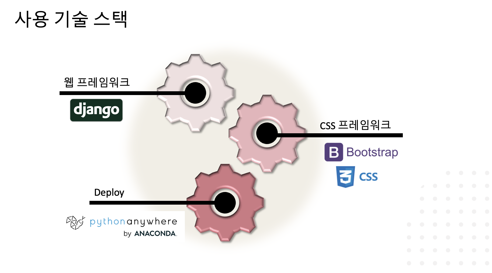

프로젝트 계기
저희가 개발한 웹사이트는 ‘롤링페이퍼’로, 현재 인스타그램 등 sns등을 통해 급격히 확산된 ＇롤링페이퍼’ 사이트의 수요를 인지하고 더 다양한 롤링페이퍼 컨셉의 필요성을 느껴 프로젝트를 시작하게 되었습니다. 이 과정에서 저희가 중요하게 생각한 것은, 첫 번째로, 기존의 롤링페이퍼 사이트를 참고는 하되, 저작권 침해로 인한 문제를 발생시키지 않을 것, 두 번째로 기존의 롤링페이퍼 활용성과 다른 지점을 찾아 새로운 컨셉으로 개발할 것이었습니다. 이러한 중요한 포인트를 중점으로 개발한 이 웹은 크리스마스, 설, 생일 등에만 잠깐 사용하는 웹이 아니라 상시적으로 언제든 웹사이트에 방문해 축하 답글을 달 수 있는 형식입니다. 많이들 아시는 ‘ASK’라는 웹 페이지와 진저호텔 롤페 웹사이트를 결합하여 상시적으로 이루어지는 롤링페이퍼 페이지를 만들었다고 생각해주시면 좋을 것 같습니다.
사용기술스택
프로젝트 역할 분배
- 프로젝트 팀 인원 : 3명 + 멘토 2명
- 역할 분배 : 프론트엔드 2명, 백엔드 1명
- 팀 내 맡은 역할 : 프론트엔드 및 발표
- 사용한 툴 : 장고, 깃허브, 디스코드, 노션, 피그마
보완점 및 발전지향점
- 댓글 목록 화면을 자바스크립트를 활용해 감각적인 화면으로 구성하려다, 백엔드와 연결하는 과정에서 작업이 원활치 않아 단순한 화면으로 대체했었습니다. 추후에 발전시킨다면, 이 아쉬운 부분을 보완하여 자바스크립트를 활용한, 보다 더욱 감각적인 화면으로 개발하면 좋을 것 같습니다.
- 본인의 게시판을 스스로 직접 디자인하고 스타일링 할 수 있도록 ＇나만의 게시판 만들기’ 과정을 하나 추가하여 게시판을 사용하는 유저들에게 싸이월드와 같은 흥미를 느낄 수 있게 하면 좋을 것 같습니다.
- 회원가입을 보다 쉽게 진행할 수 있도록 sns 소셜 아이디로 로그인 할 수 있게 연결하고, sns에 곧바로 공유할 수 있는 기능을 추가하여 sns에서 활용하기 좋은 환경을 만들어 주고 싶습니다.
- ＇진저호텔 웹사이트’처럼 프로젝트를 위해 개발한 웹을 실제로 배포해 유저 사용량을 늘려보고, 웹사이트의 보완점을 하나씩 수정해간다면 더욱 좋은 경험이자 훌륭한 프로젝트 완수가 될 것이라 생각합니다.